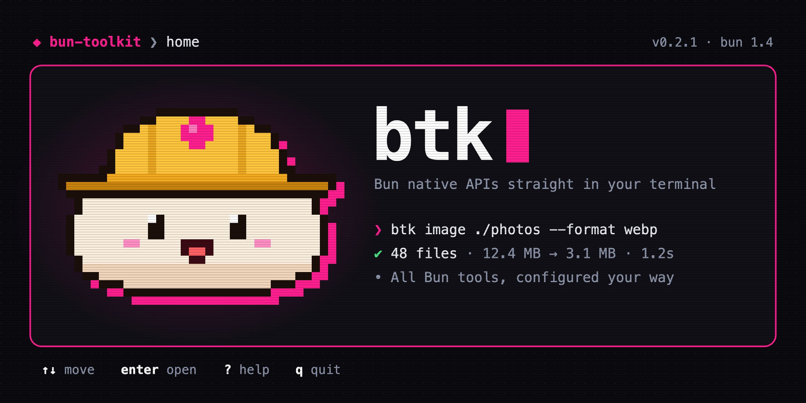

bun-toolkit

Bun native APIs straight in your terminal.
One CLI, one config, one output style, and an interactive dashboard for every tool.


btk puts the APIs built into Bun, such as Bun.Image, Bun.CryptoHasher, Bun.YAML and Bun.password, behind one command. It ships as a single binary, so it needs neither Bun nor Node on the machine that runs it.
- Six tools:
image,hash,convert,password,compresswithdecompress, andmd. - One config in TypeScript or JSON, with global and per-project tiers and
BTK_*environment variables. - Three output modes: colors in a terminal, plain text in CI, and one JSON document with
--json. - A dashboard for every tool:
btk uiorbtk <tool> --ui.
Install
Homebrew
This repository is the tap. Add it once, then install:
brew tap davidpn11/bun-toolkit https://github.com/davidpn11/bun-toolkit
brew install davidpn11/bun-toolkit/bun-toolkit
Homebrew 5.1 and later refuse to load a formula from a tap you haven't trusted. If yours does, run the brew trust command it prints, then install again. brew upgrade bun-toolkit picks up new releases.
Pre-releases are a separate formula. Only one of the two can be installed at a time, because both install btk:
brew install davidpn11/bun-toolkit/bun-toolkit-beta
Download a binary
Every release has binaries for macOS, Linux and Windows, plus a SHA256SUMS file:
curl -fsSLO https://github.com/davidpn11/bun-toolkit/releases/latest/download/btk-darwin-arm64
curl -fsSLO https://github.com/davidpn11/bun-toolkit/releases/latest/download/SHA256SUMS
grep btk-darwin-arm64 SHA256SUMS | shasum -a 256 -c
chmod +x btk-darwin-arm64 && sudo mv btk-darwin-arm64 /usr/local/bin/btk
Replace darwin-arm64 with darwin-x64, linux-x64, linux-arm64 or windows-x64.exe.
From source
Requires Bun 1.4 or later.
git clone https://github.com/davidpn11/bun-toolkit && cd bun-toolkit
bun install
bun link # puts btk and bun-toolkit on your PATH
Quick start
btk info # versions, platform, output mode, config status
btk init # create ./btk.config.ts in this project
btk image hero.png # hero.webp next to it
btk hash package.json # sha256, in sha256sum format
btk convert config.yaml # JSON on stdout
btk ui # the dashboard
Every command takes --help, --json, --verbose, --no-color and --config <path>.
Tools
btk image
Convert, resize and inspect images with Bun.Image, without sharp or ImageMagick. Full docs
btk image ./assets -r --format avif -q 60 # a whole tree, as AVIF
btk image ./photos --preset web --out-dir dist/img # 1920px wide, q75, into dist/img
btk image info hero.png --placeholder # dimensions, size and a ThumbHash
btk hash
Hash and verify files with 31 algorithms. The output is sha256sum-compatible, and SRI and HMAC are supported. Full docs
btk hash ./dist -r > SHA256SUMS # a checksums file
btk hash check SHA256SUMS # exits 1 if a file changed
printf hello | btk hash verify - 3610a686 # check standard input against a known hash
btk convert
Convert between JSON, YAML, TOML, XML, JSON5, JSONC and JSONL. Full docs
btk convert docker-compose.yml | jq '.services | keys'
btk convert tsconfig.json --to yaml -o tsconfig.yaml
cat logs.jsonl | btk convert --from jsonl
btk password
Hash, verify and inspect argon2 and bcrypt password hashes. Full docs
btk password hash # type it twice at a hidden prompt
echo "$PASSWORD" | btk password verify "$HASH"
btk password inspect "$HASH" # algorithm, cost, and whether it needs a rehash
btk compress and btk decompress
gzip, zstd, brotli and deflate, plus folder archives. Full docs
btk compress ./dist --each --gzip --brotli # precompress static files
btk compress ./site --zstd # site.tar.zst
btk decompress site.tar.zst # site/
btk md
Preview markdown in the browser with live reload, or styled in the terminal, serve a whole docs folder with a sidebar, and render it to HTML. Themes cover both, and plugins can add more. Full docs
btk md README.md # live preview in the browser
btk md CHANGELOG.md --terminal | less -R # styled for the terminal
btk md serve docs # the whole folder, with a sidebar
btk md html README.md > README.html # a standalone page
Configuration
btk reads a global config in ~/.bun-toolkit/ and a project config found by walking up from the current directory. Both can be TypeScript or JSON:
// btk.config.ts
import { defineConfig } from "bun-toolkit";
export default defineConfig({
tools: {
image: { format: "avif", quality: 70, presets: { hero: { maxWidth: 2560 } } },
hash: { algorithm: "blake2b512" },
convert: { to: "yaml", indent: 4 },
},
});
{ "tools": { "image": { "format": "webp", "quality": 80 } } }
Save the JSON form as btk.config.json or bun-toolkit.config.json. It needs nothing installed in the project.
Precedence, highest first: flags, BTK_<TOOL>_<KEY> environment variables, the project config, the global config, built-in defaults. btk config shows every resolved value and where it came from, and btk config validate exits 78 when a config is invalid. When a tool runs without a project config, btk warns on stderr. noLocalConfig in the global config turns that off or makes it an error. See docs/config.md.
Output modes and exit codes
btk picks the output mode once, at startup:
| Mode | When | Output |
|---|---|---|
json | --json, BTK_OUTPUT=json, AGENT=true, or output.json in config | One JSON document on stdout: { "ok": true, "command": "...", "data": ... } or { "ok": false, "error": { "code", "message", "hint" } } |
ci | CI=true, NO_COLOR, --no-color, TERM=dumb, or stderr not a terminal | Plain text, no ANSI, tab-separated tables |
human | otherwise | Colors, icons, spinners, progress bars |
| Code | Meaning |
|---|---|
| 0 | Success |
| 1 | The command failed |
| 2 | Usage error: unknown command or option, invalid value, missing argument, no terminal for --ui |
| 78 | Config error: a config file failed to load or validate |
| 130 | Cancelled with Ctrl+C |
Releases
Every change is in the changelog. Stable releases come from master, and pre-releases come from the beta branch and install as bun-toolkit-beta. docs/releasing.md explains how a release is cut.
Development
bun run dev -- info # run from source
bun test # unit, TUI and integration tests
bun run test:dist # build the binary and run the end-to-end suite against it
bun run check # Biome, oxlint and tsc
bunx changeset # describe your change for the changelog
bun run release:version # turn pending changesets into a version, before a release
bun run release:try beta # install the published beta in a throwaway container
Every pull request that changes what users see needs a changeset. docs/architecture.md covers how the CLI is built and how to add a tool. docs/roadmap.md has what comes next.